Лабораторная работа №4
Операционные системы
Николаева А. Б.
Российский университет дружбы народов, Москва, Россия
15 июня 2026
Информация
Докладчик
- Николаева Ангелина Борисовна
- Студентка НКАбд-04-25
- Российский университет дружбы народов
- [1032253612@rudn.ru]

Цель работы
Получение навыков правильной работы с репозиториями git.
Задание
Научиться работать с git на более высоком уровне.
Выполнение лабораторной работы
Установка git-flow
Установила git-flow.
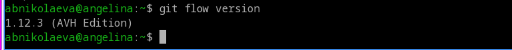
Установка Node.js
Установила Node.
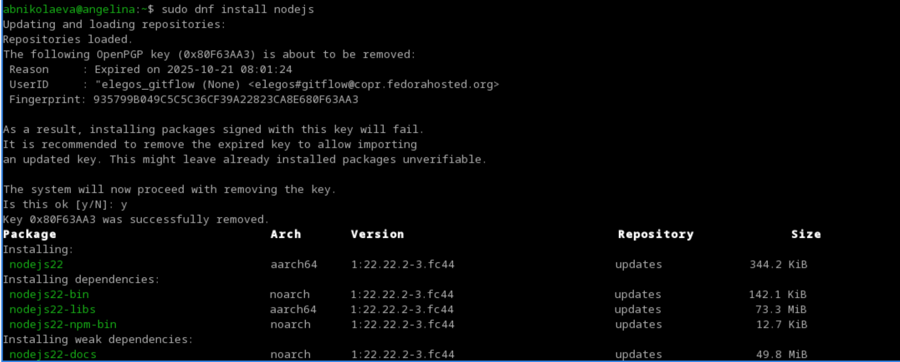
Настройка Node.js
Запустила pnpm setup и выполнила
source ~/.bashrc.
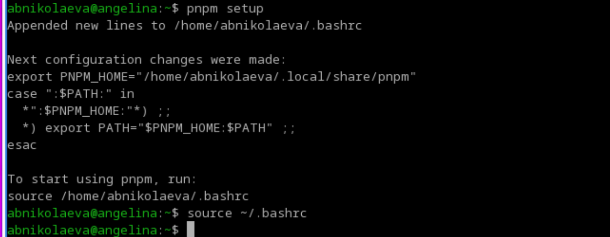
Практический сценарий использования git
Подключение репозитория к github
- Создала репозиторий на GitHub. Назвала его
git-extended.
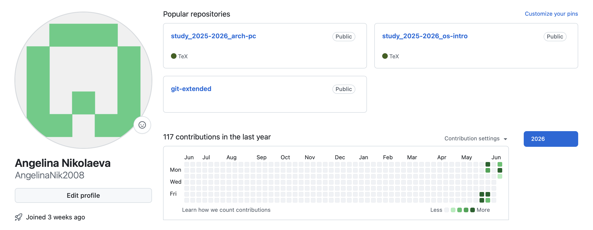
Сделала первый коммит и выложила его на github.
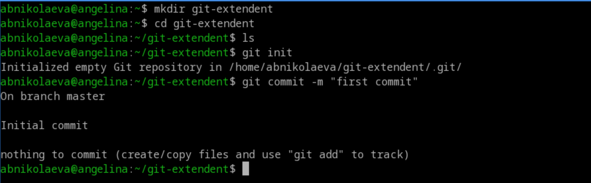
Конфигурация общепринятых коммитов.
- Конфигурация пакетов Node.js .
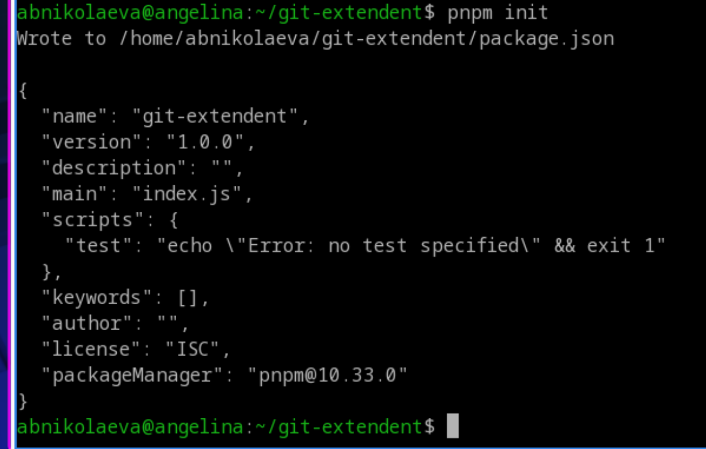
Заполнила несколько параметров пакета и сконфигурировала формат коммитов.
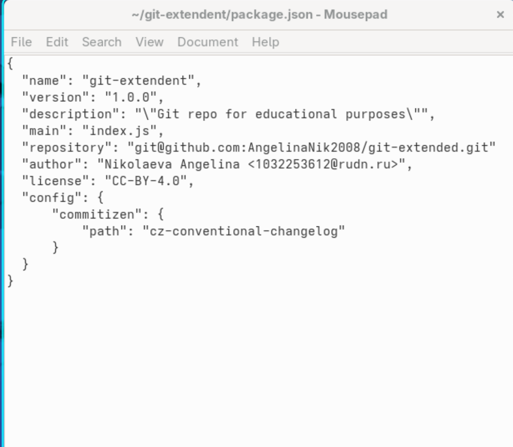
Конфигурация git-flow
- Инициализировала git-flow.
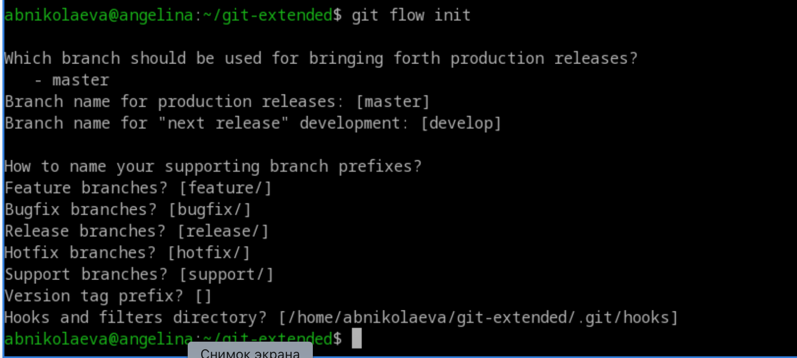
- Проверила, что я на ветке
develop, загрузила весь репозиторий в хранилище, установила внешнюю ветку как вышестоящую для этой ветки и создала релиз с версией 1.0.0.
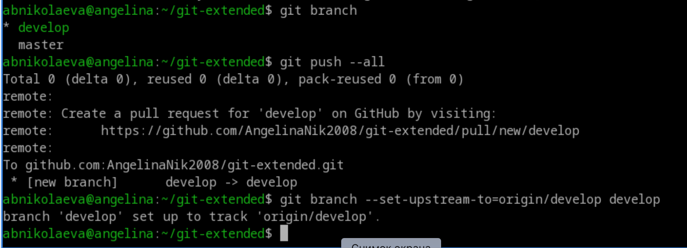
Работа с репозиторием git
Создание релиза git-flow
- Создала релиз с версией
1.2.3, обновила номер версии вpackage.json, создала журнал изменений и добавила журнал изменений в индекс, залила релизную ветку в основную ветку.
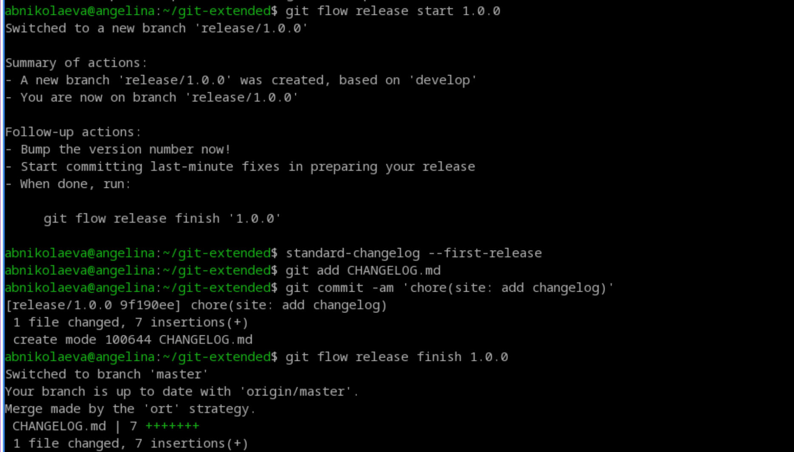
1.2.3, обновление номера версии в
package.json, создание журнала изменений и добавление
журнал изменений в индекс- Отправила данные на github, создала релиз на github с комментариями из журнала изменений.
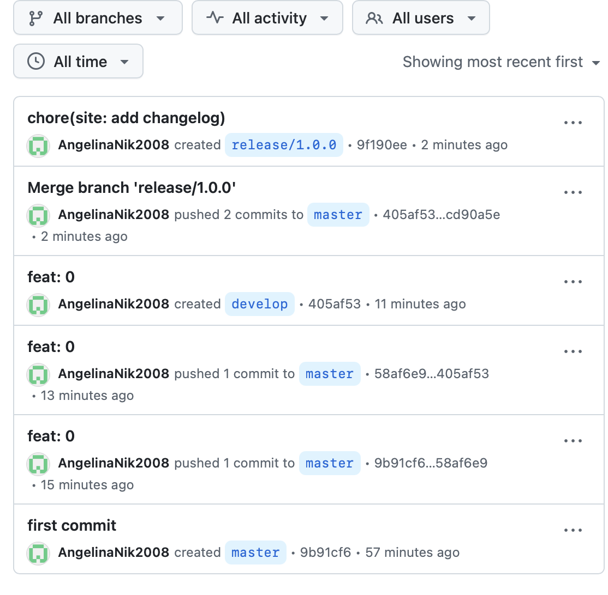
Выводы
В ходе данной лабораторной работы были получены навыки правильной работы с репозиториями git.